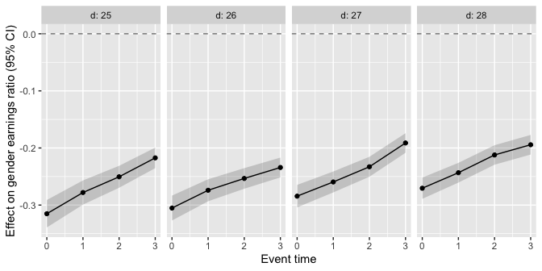

This package accompanies the paper Leventer, Dor. Identification of Child Penalties. arXiv:2602.07486.
childpen estimates the paper’s 2x2 comparisons of parents by age at first birth (a treatment group against the closest not-yet-treated group, by gender), with standard errors clustered by person:
- within-gender DID and the triple difference;
- the conventional normalized estimator of child penalties, with the paper’s bias-bounding exercise (
bias_bounds()); - the effect of parenthood on the gender earnings ratio (identified under NTD) and the accounting of the gender gap into parenthood and other factors;
- the proportional triple-difference versions of the online appendix;
- aggregates across treatment groups (
aggregate_estimands()), and pair-by-pair validation tests.
simulate_data() generates a panel with the paper’s patterns and known true values.
Installation
Install the released version from CRAN:
install.packages("childpen")Or the development version from GitHub:
# install.packages("remotes")
remotes::install_github("dorleventer/childpen")Example
The effect of parenthood on the gender earnings ratio, by treatment group and event time (the NTD estimates of the paper’s Figure 6b), on simulated data:
library(childpen)
library(ggplot2)
sim <- simulate_data(n_individuals = 20000, treatment_groups = 24:32)
res <- multiple_treatment_group_analysis(sim, treatment_groups = 25:28, periods_post = 3,
periods_pre = NULL, verbose = FALSE)
est <- subset(res, method == "NTD" & estimand == "rho_effect")
ggplot(est, aes(event_time, est, ymin = ci_l, ymax = ci_h)) +
geom_hline(yintercept = 0, linetype = "dashed", colour = "grey50") +
geom_ribbon(alpha = 0.2) + geom_line() + geom_point() +
facet_wrap(~ d, nrow = 1, labeller = label_both) +
labs(x = "Event time", y = "Effect on gender earnings ratio (95% CI)")
Articles
- Notation and output: the 2x2, the estimands, and what each output row is.
- Identification: parallel trends, the validation test and NTD, the non-identification of the conventional target, bias bounding, and the effect on the gender earnings ratio.
- Estimation: the grid of comparisons, every estimator and its influence function.
- Aggregation: estimands across treatment groups, weights and standard errors.
- Replicating the paper: the paper’s figures, one by one, on simulated data.